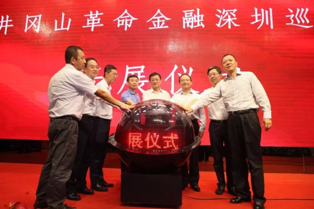
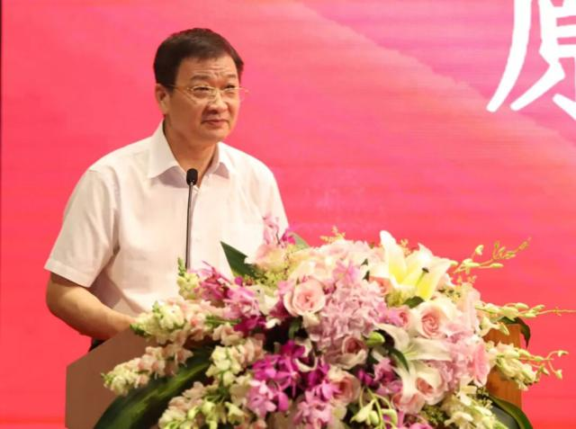
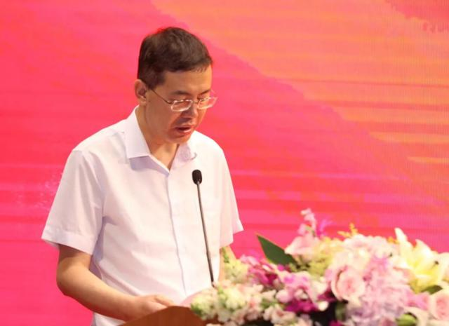
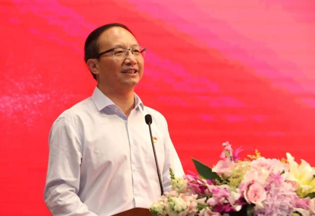
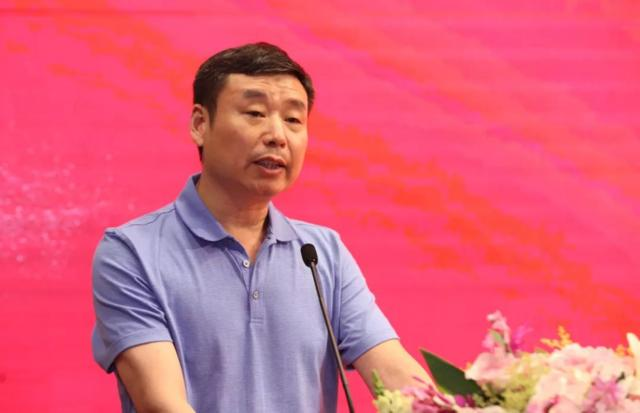
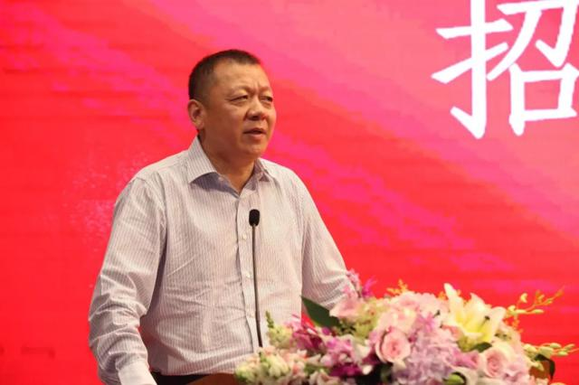
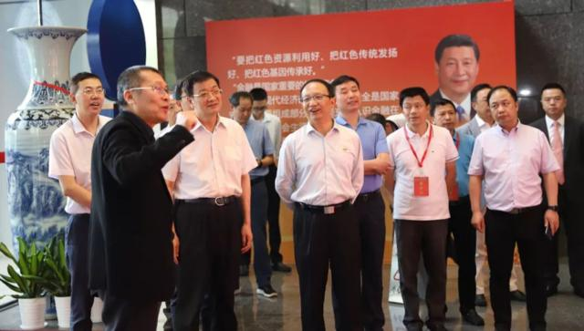
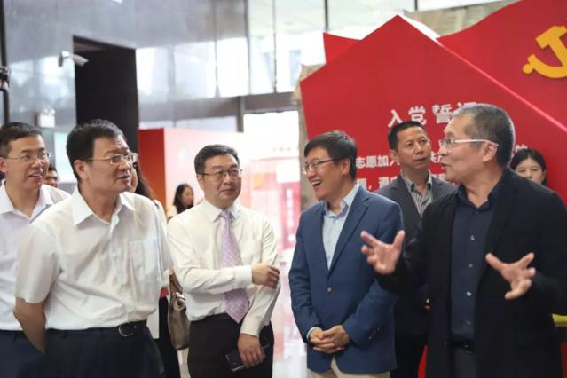

2018年7月1日下午，由中国金融博物馆联合井冈山市人民政府及深圳市人民政府金融发展服务办公室主办的“不忘初心：井冈山革命金融深圳巡展”在深南大道2016号招商银行深圳分行隆重开展。

开幕仪式由中国金融博物馆理事长王巍主持，原中国银监会副主席郭利根，深圳市副市长艾学峰，江西省吉安市市长王少玄，井冈山市市长焦学军，中国银监会深圳监管局党委书记、局长王晓辉，深圳市金融办党组书记、主任何晓军，招商银行总行副行长赵驹及红岭控股董事长周世平共同参与启动仪式。此外，中国并购公会会长尉立东、招商银行深圳分行行长岳鹰、珠海格力电器董事长董明珠、深圳市投资控股有限公司董事长王勇健、全港各区工商联会长卢锦钦等也出席开幕仪式，招商银行深圳分行及其他金融机构、当地知名企业及相关媒体等近300人悉数到场，共同见证了这一重要时刻。
嘉宾致辞
原中国银监会副主席郭利根：我们继承红色基因就是要向革命先烈们学习，发扬光大井冈山精神，就是要坚定理想信念，遵守法律法规，使每个金融机构、每项金融业务都严守底线、合规金融；促进中国金融业的发展，就是要不断地深化改革，发展壮大，使金融业成为国家的核心竞争力，更好地支持中国经济的发展；就是要牢记金融是服务业，必须牢固为实体经济服务的定位，要学习革命先烈们的创业精神，学习他们的忠诚担当，学习他们的实事求是，从而更好地实现“中国梦”、实现“两个一百年”的宏伟目标。
深圳市副市长艾学峰：抚今追昔，我们始终牢记革命先驱为共和国金融体系奠定的基础，不忘初心，继承和大力弘扬红色金融的优良传统，是新时代做好金融工作的强大动力。今年是改革开放40周年，本次井冈山革命金融展选择在深圳这个全国改革开放的先行地举办，是对我们做好新时期金融改革创新工作的鞭策。我们要坚决贯彻党对金融工作的决策部署，聚焦金融工作“三大基本任务”，不断开拓金融工作新局面。
江西省吉安市市长王少玄：举办这次革命金融巡展对于吉安市来说，就是要进一步学习深圳等发达地区的金融发展经验，顺应金融发展的新趋势，对接大数据、区块链等新的技术，推进我们老区金融产业的新发展，加快实现全面小康和绿色崛起。金融与经济共生共融，金融活则经济活。我们非常希望通过这次金融展，能够起到让历史启迪未来的作用，也希望通过这次金融展能够架起老区与特区发展的金融桥梁。
红岭控股董事长周世平：“井冈山革命金融展”以全球视角展现波澜壮阔的中国革命金融史，全方位、多层面地呈现了井冈山革命金融发展历程以及蕴含其中的革命精神，对于我们个人成长及城市的长远发展具有十分重要的借鉴指导意义。不忘井冈山革命金融来路，是为更好地发展深圳金融业。希望大家通过重温井冈山的革命精神，了解学习革命金融知识，从而提升自身金融素养，为深圳金融事业的发展献上一份绵薄之力。
启动仪式结束后，招商银行总行副行长赵驹进行总结发言，他表示未来一个月的展出时间，欢迎社会各界朋友来参观，了解革命金融发展历史，重温井冈山革命精神，以历史启迪未来。
参观展览
当天下午，出席“不忘初心：井冈山革命金融深圳巡展”的众位领导、嘉宾与到场的各部门单位、金融机构领导以及其他工作人员一同参观了展览，并对展览传递的价值意义给予高度肯定。
 当天晚上，王巍先生还陪同招商银行田惠宇行长等一行参观了展览，并就展览重点内容进行简短交流。
巡展动态
“不忘初心：井冈山革命金融展”2018年将陆续在全国各地巡展。据悉，此次在招商银行深圳分行一楼大堂举办的深圳巡展，将向社会免费开放至7月31日，欢迎各界人士前来参观。随着“井冈山革命金融巡展”先后在井冈山、上海和深圳3个城市展出，中国金融博物馆的影响力与日俱增，将获得更多的关注和好评，能有效提升社会大众的金融素养，以更好地防范金融风险，维护金融安全，使人们的经济活动更加安全、生活更加快乐。目前，该展览主要内容已由中国金融博物馆编著成书——《革命金融简史》，欢迎大家关注并购买。未来，“井冈山革命金融巡展”将走进更多城市，普及革命金融历史，传承红色基因、弘扬井冈山精神。